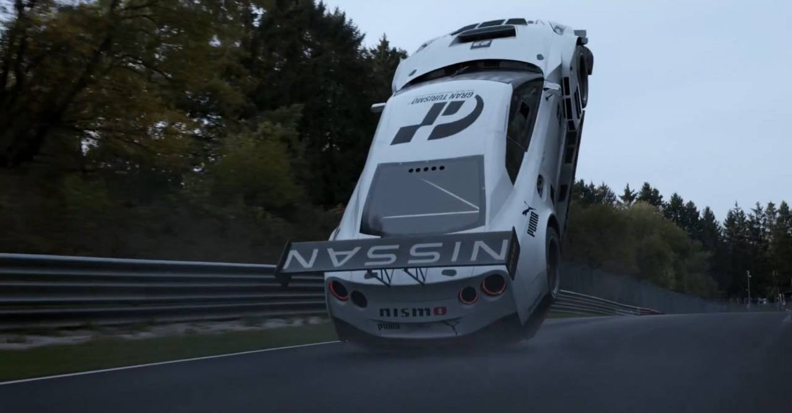
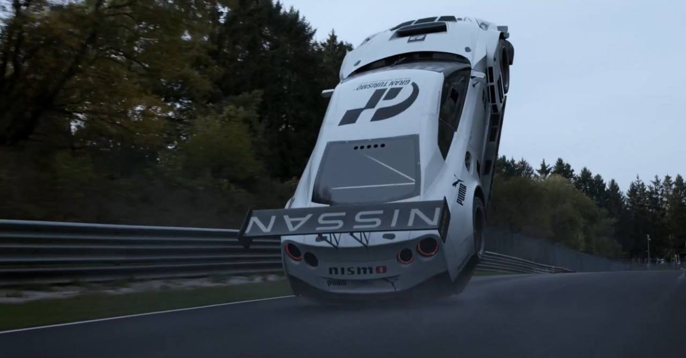
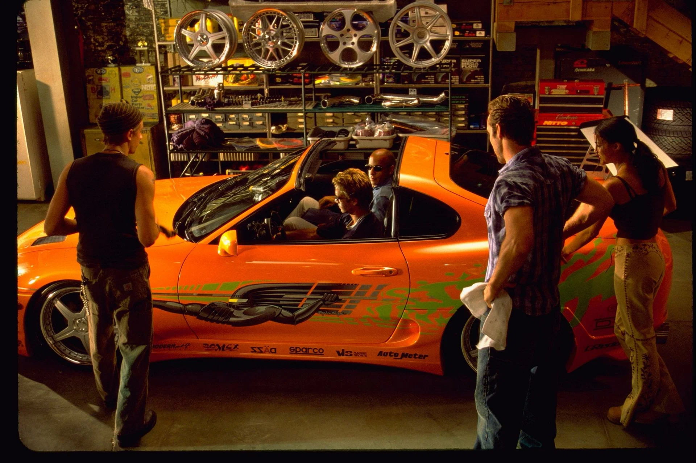
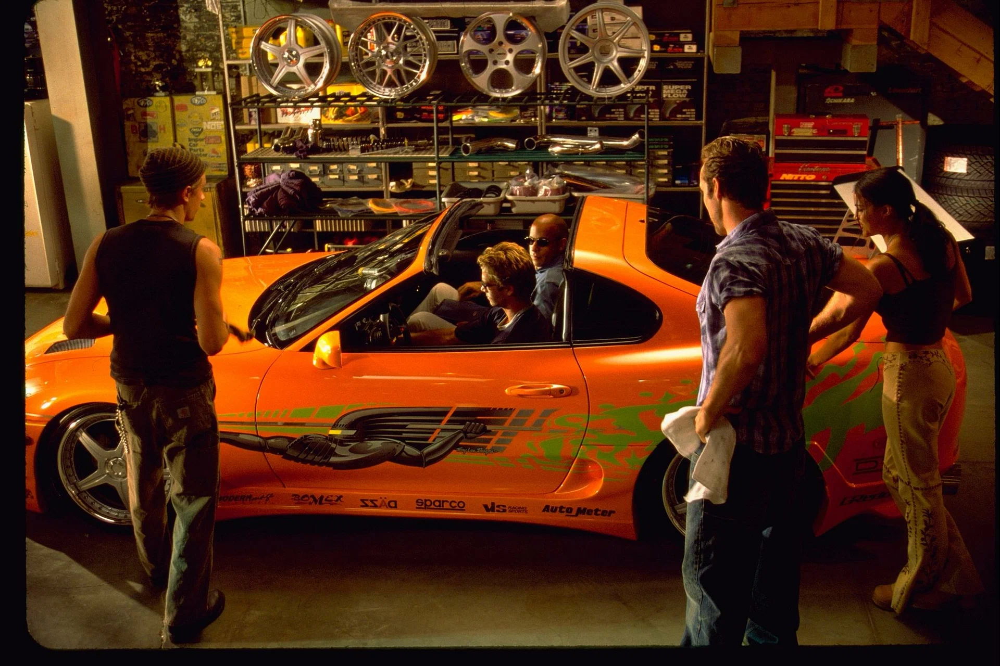
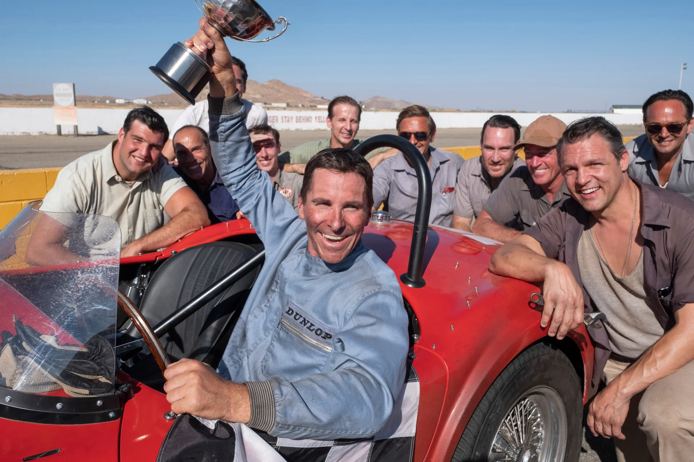
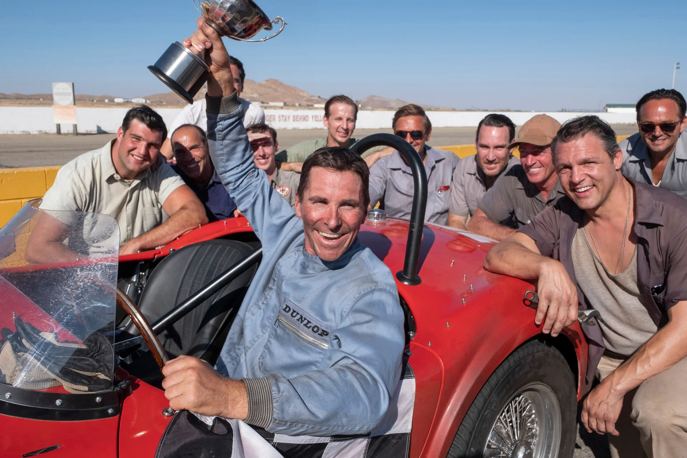

Фильм основан на реальной истории заядлого геймера (Арчи Мадекве), несостоявшегося автогонщика (Дэвид Харбор) и креативного маркетолога (Орландо Блум). Вместе они рискнут всем, чтобы найти своё место в самом элитном виде спорта. Это вовсе не игра, это вдохновляющая, захватывающая и насыщенная событиями история, которая докажет: нет ничего невозможного, если ты действительно хочешь победить.

 

Год: 2023
Страна: Сша/Япония
Жанр: боевик, драма, спорт
Режисер: Нил Бломкамп
Его зовут Брайан, и он — фанат турбин и нитроускорителей. Он пытается попасть в автобанду легендарного Доминика Торетто, чемпиона опасных и незаконных уличных гонок. Брайан также полицейский, и его задание — втереться в доверие к Торетто, подозреваемому в причастности к дерзким грабежам грузовиков, совершаемым прямо на ходу.

 

Год: 2001
Страна: США/Германия
Жанр: боевик, триллер, криминал
Режисер: Роб Коэн
Сюжет повествует о группе американских инженеров и дизайнеров. В 1960-х под руководством конструктора Кэрролла Шелби и при поддержке британского гонщика Кена Майлса они должны были с нуля сделать абсолютно новый спорткар, способный опередить Феррари — непобедимого чемпиона 24-часовой гонки на выносливость Ле-Ман.

 

Год: 2019
Страна: США
Жанр: биография, спорт, драма, боевик
Режисер: Джеймс Мэнголд